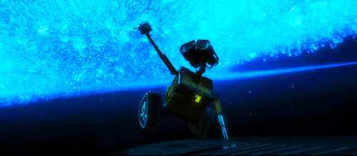
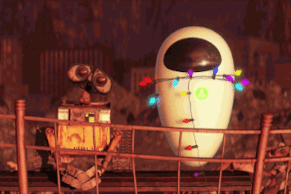

WALL·E
- Publicado el 12/Mayo/23
Sinopsis
La historia comienza 700 años después de que los humanos abandonarán la Tierra debido que se volvió inhabitable por la exagerada cantidad de basura generada por el ser humano, dejando unos robots modelo Wall·e (mira, como el título de la película), para que la limpien completamente; bueno la historia se centra en Wall·e (mira, lo hizo de nuevo), uno de estos robots que se quedó solo porque todos se deterioraron, así que pasa sus días limpiando basura junto con su amigo cucaracha hasta que un día llega una nave del espacio, la cual deja a Eva, una robot encargada de buscar vida dentro del planeta; fue aquí donde nuestro amigo Wall·e queda bien enamorado y también donde empieza su aventura en un viaje por el espacio, todo por su amor.

Reseña
Muy bien, empecemos con la premisa; nos muestran un mundo donde ya no hay humanos porque
lo contaminaron todo, se largaron y le dejaron el trabajo a unos robots para que limpien
todo, uno de ellos generó su propia personalidad, pero sigue haciendo lo suyo, hasta que
ve llegar una robot, de la cual Wall-e queda enamorado debido a su gran falta de afecto
e intenta de muchas maneras el acercarse con ella. Básicamente una comedia romántica, y
yo que pensaba que Pixar no sabría hacer historias de amor, sobre todo de personajes que
no dicen ni una palabra y lo expresan todo mediante gestos, sonidos y expresiones
digitales, que hasta el día de hoy sigo sin entender como puedes encariñarte tanto con
un personaje así; aquí realmente el estudio se la marcó.
Y aunque la película sea considerada “infantil” , no hay ni una duda de que las personas
adultas puedan disfrutarla también como si fueran niños, una autentica maravilla
audiovisual que junta sus espléndidos escenarios, excelente banda sonora, y aunque el
desarrollo de la película sea algo tipo “ir del punto A al punto B”, durante todo ese
trayecto te va asombrando cada vez más y más, ya que no solo incluye efectos y paisajes
bonitos, sino que también personajes de cuales no puedes evitar encariñarte, enserio,
debería ser considerado crimen contra la humanidad el simple hecho de que te llegue a
caer mal Wall-e.
Pero también algo muy impresionante es su historia, que siendo simple te deja muchos
mensajes y criticas sociales que hasta el día de hoy siguen sucediendo, el como manejan
que los seres humanos se han convertido en seres consumistas y perezosos debido a la
automatización total de sus vidas, alimentos, educación, etc. Que básicamente ya no
pueden ser considerados humanos como tal, si no como zombis flojos con conciencia. Pero
que también muestra la voluntad que tenemos para querer arreglar las cosas que
provocamos, el querer ayudar y apoyarnos entre sí, simplemente una obra maestra.

Conclusión
Nada más que decir, ya he dicho mucho de porque esta película es mi favorita, y aun así siento que me faltó bastante que decir, pero no quería que fuera una reseña muy larga, aun así, como ya he dicho, es una gran película, si no la has visto te la recomiendo bastante, y si ya la viste pues míratela de nuevo, yo acabando de escribir esto la veré otra vez ya que total nunca me cansó de verla, nos vemos en la siguiente reseña, adiós!
